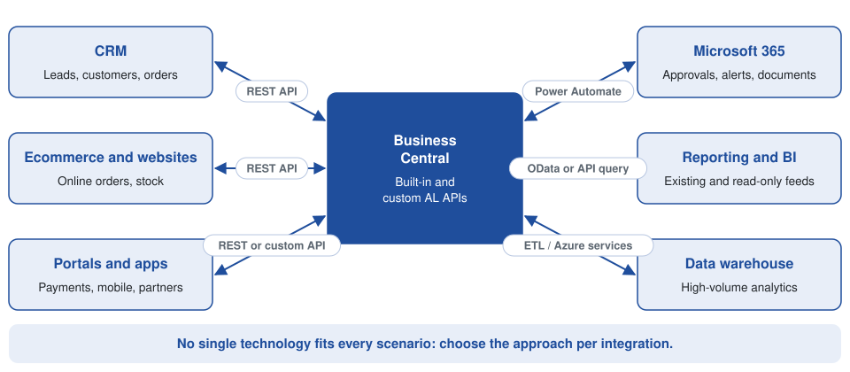
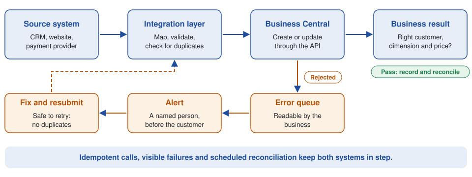

Business Central Integration: What Are the Options?
Microsoft Dynamics 365 Business Central rarely operates in isolation. It usually has to exchange data with CRM, ecommerce, banking, payroll, warehouse, payment and reporting systems, and the hard part is deciding how each connection should work. Microsoft recommends the REST API stack for connecting external applications, while OData and SOAP web services remain supported (Microsoft Learn).
What is Business Central integration?
Integration means connecting Business Central to another application so that information moves between the two automatically. The usual goals are less duplicate data entry, better data accuracy and business processes that span applications. Four typical flows:
- CRM to Business Central: a customer created in CRM is synchronised into Business Central.
- Business Central to CRM: financial or order information is made available to customer-facing teams.
- Website to Business Central: an online order creates a sales order.
- Business Central to a data warehouse: financial and operational data is extracted for reporting and analytics.
The main integration options
Each approach has a natural home, as the map below shows. The sections that follow explain when each one fits.

REST APIs
REST APIs are the preferred approach for modern Business Central integrations. Business Central ships with built-in APIs and also supports custom APIs built with AL API pages and API queries. They suit any application that needs to exchange structured data with Business Central: CRM, ecommerce, customer portals, payment systems, data services and custom business applications.
Custom Business Central APIs
Standard APIs do not always expose exactly the data another application needs. In that case a custom API can be developed in AL, and the choice of object matters:
- API page: for read and write operations, such as an external application creating or updating records.
- API query: for read-only joined or aggregated data, such as a reporting feed that combines several tables.
OData
Business Central also supports OData web services, which expose pages and queries. OData remains useful in existing integrations and reporting scenarios, but REST is the recommended method for new work.
SOAP
SOAP has been part of the Dynamics NAV and Business Central ecosystem for many years and still turns up in older integrations. When you design something new, review the architecture rather than automatically reproducing an older SOAP-based approach.
Business Central and Power Automate
Power Automate fits when an integration is mainly a workflow. For example: a purchase order exceeds €10,000, an approval is requested, a manager is notified and Business Central is updated. Business Central integrates with the wider Power Platform, including Power Automate, Power Apps and Power BI.
It works well for approvals, notifications, workflow automation, lightweight integrations, document processes, business events and Microsoft 365 integration. It is not necessarily the right answer for high-volume or highly complex integrations.
Business Central and CRM integration
CRM and ERP integration is one of the most common requirements, and it only stays maintainable if each piece of data has one owner. A Dynamics 365 CRM environment typically manages leads, opportunities, contacts, accounts and sales activities. Business Central manages customers, sales orders, invoices, payments, credit notes and financial transactions.
| Data | System of record |
|---|---|
| Sales opportunity | CRM |
| Sales activity | CRM |
| Customer financial account | Business Central |
| Sales order | Business Central |
| Invoice | Business Central |
| Payment | Business Central |
Without this agreement, integrations become hard to maintain. For a deeper look at this scenario, see Connecting Dynamics 365 CRM and Business Central: An Integration Guide.
Integration architecture: the questions that matter
A robust integration is more than moving data from A to B. These questions are often more important than the choice of API technology:
- Data ownership: which system owns the data?
- Direction: one-way, two-way, event-driven or scheduled?
- Frequency: real time, every few minutes, hourly or daily?
- Volume: how many records are transferred?
- Failure handling: what happens when Business Central rejects a transaction?
- Idempotency: what happens if the same message is sent twice?
- Monitoring: how will failed integrations be identified?
- Security: how will authentication and authorisation be managed?
- Reconciliation: how do you prove both systems hold the expected data?

When a custom integration is required
Standard connectors are useful, but they do not solve every problem. A custom integration is usually needed when:
- The external system has a proprietary API.
- Business Central holds customised data.
- Standard APIs do not expose the required information.
- Complex transformation rules apply.
- Several systems take part in one process.
- Data must be validated before it enters Business Central.
- Legacy integrations need to be replaced.
Such a solution can combine Business Central APIs, AL development, Azure services, Power Automate, SQL and ETL.
Common problems
The usual culprits are duplicate customers, failed API calls, incorrect mappings, missing dimensions, timeouts, authentication failures, inconsistent master data, duplicate transactions, poor error handling, no reconciliation process and legacy integrations nobody can maintain.
A technical integration can work while the business process still fails. An API can successfully create a sales order that carries the wrong customer, dimension or price. That is why integration testing has to validate the business result, not just whether an HTTP request returned successfully.
Choosing the right approach
No single technology fits every scenario. The right design depends on the data, the process, the volume, the reliability required and the systems involved.
| Approach | Best suited to |
|---|---|
| REST API | Modern application-to-application integration |
| Custom API | Standard endpoints do not expose the data or operations needed |
| Power Automate | Workflow and lower-complexity automation |
| OData | Suitable existing or reporting-oriented scenarios |
| Azure / integration services | More complex enterprise integration requirements |
| ETL / data platform | High-volume analytical and reporting requirements |
Need help with a Business Central integration?
A Business Central integration should be designed around the business process, not just two APIs. I have worked across Business Central, Dynamics CRM, ERP integrations, REST APIs, Power Automate, ETL, Azure, SQL and enterprise reporting, including data flows between CRM, ERP and reporting environments. If you need to connect Business Central to CRM, an external application, a website, Power Platform or a data platform, get in touch at declan@feelyconsultants.com or find me on LinkedIn.